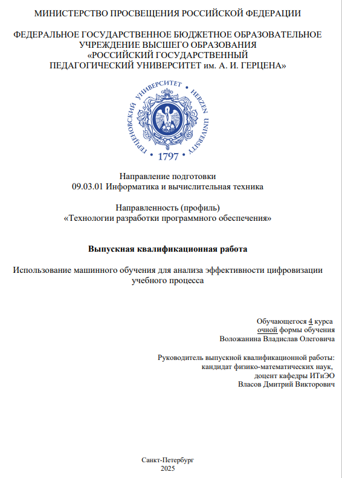

Обо мне
Учебные модули
Дипломная работа
Курсовые работы
Практические работы
Дипломная работа

Выпускная квалификационная работа
"Использование машинного обучения для анализа эффективности цифровизации учебного процесса"